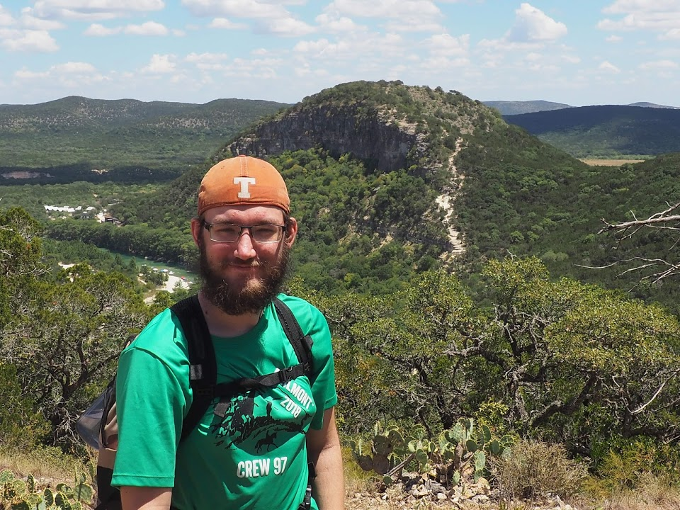

About Me: Will Smylie

Contact info:
Address: 100 Place St., Austin Texas
Phone #: 1-800-888-8888
email: williamsmylie@utexas.edu
Education:
Highschool: Vista Ridge HS
College: The University of Texas at Austin
Major: Mechanical Engineering
Work Expiriences:
NASA JPL & HeroX “Honey, I Shrunk the Payload” Challenge
Applied Research Lab - UT Austin
Dana Incorporated - Cedar Park Technology Center
Mindworx Programs and Camps Instructor
Achievements:
UT Engineering Honors Student
FTC World Championship Semi-Finalist (top 24/5300 teams)
FTC World Championship THINK Award (best engineering notebook) nominee (top 10/5300 teams)
Won FTC 1st Place - UIL Texas State Robotics Competition 2017 (UIL partnered with FIRST Tech Challenge)
Team advanced to round 2 of the NASA JPL challenge mentioned above
Personal interests:
Robotics
Hiking/camping/backpacking
3D Printing
Video Games
D&D and other tabletop games
Music
Clubs (ASME, E-nable, IEEE RAS, and more)
Links of Interest:
FIRST Tech Challenge
Worldwide Highschool robotics competition
IEEE RAS Region5
IEEE college robotics competition
UT Chain Reaction Competition
Rube Goldburg competition that we (UT ASME) hosted
Page last updated: 2/10/2021 Author:
Will Smylie